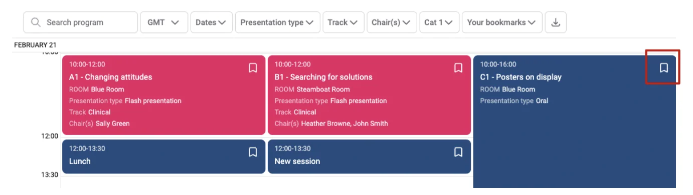
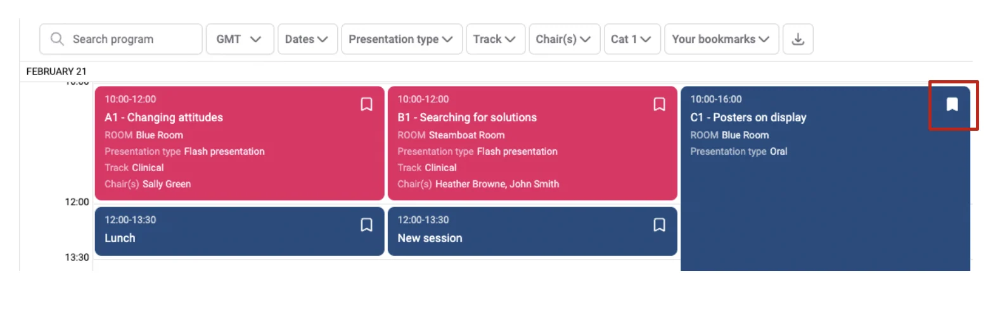
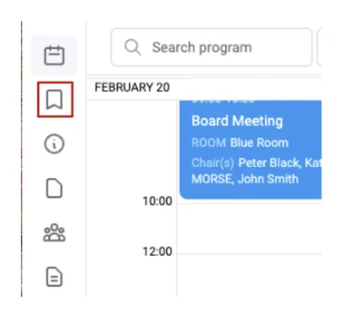
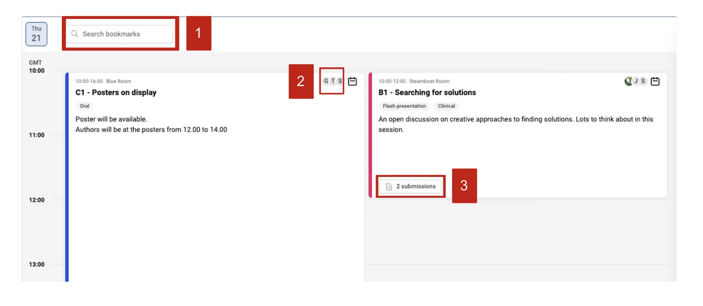

Bookmarking sessions on the event schedule
Learn how to bookmark your favourite sessions on the event schedule.#
Attendees can now bookmark their favourite sessions they wish to attend on an events schedule (timetable) for quick access to these sessions.
To bookmark a session go to the session schedule, and click on the bookmark tab (top right) of the session or submission title.

You can see that it has now been selected.

Click the Bookmarks tab on the left-hand column to view your bookmarked sessions and submission titles.

On the next screen, you will see all your bookmarks in a scheduled view.
On this screen, you can find out all the information about the sessions by searching your bookmarks (1), clicking to see who the presenters are (2), and what submissions are included in the sessions (3).

Should you require further assistance, please get in touch with our Support Team via our contact form.
Did this page solve it?
Thanks — this helps us fix it.
Didn't solve it? Ask our support team
No question is too small, and there's no charge for asking. Raise a ticket and someone who knows the software will pick it up.